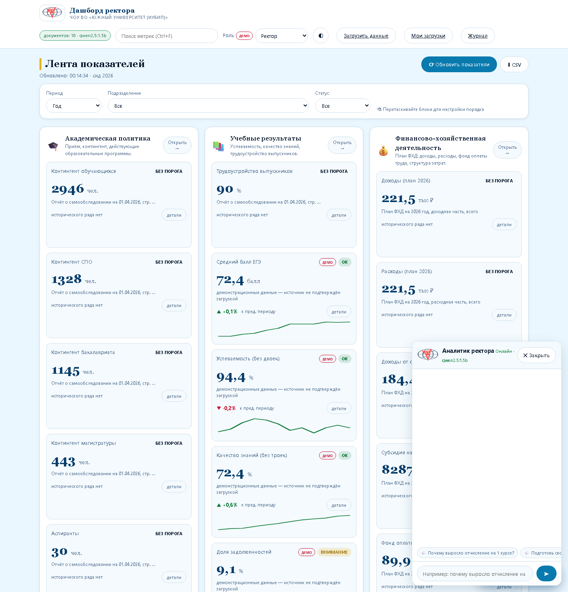
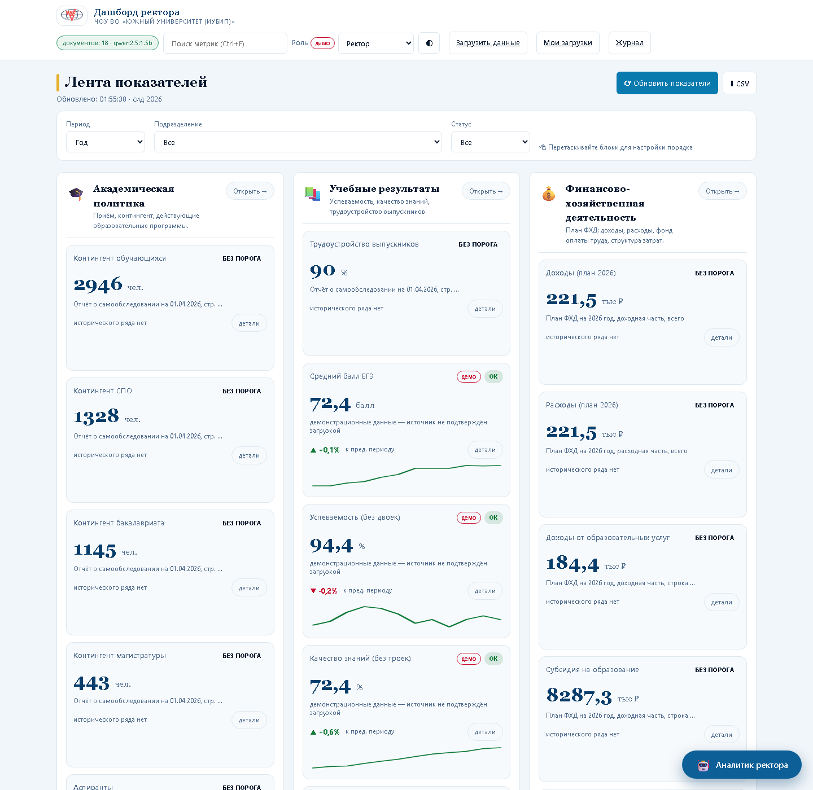

Слева — как было до правок, справа — как стало. Смотреть стоит на четыре вещи: форма кнопок в шапке, отсутствие тени у карточек, линия под названием блока, положение кнопки «Открыть».


Проверка в браузере за две строки (Console):
getComputedStyle(document.querySelector('.btn')).borderRadius → «6px» — новый стиль, «999px» — старый.
getComputedStyle(document.querySelector('.widget-block')).boxShadow → «none» — новый.